| Name | Image | Rarity | Type | Cost | Description |
|---|
| Acid Splash | 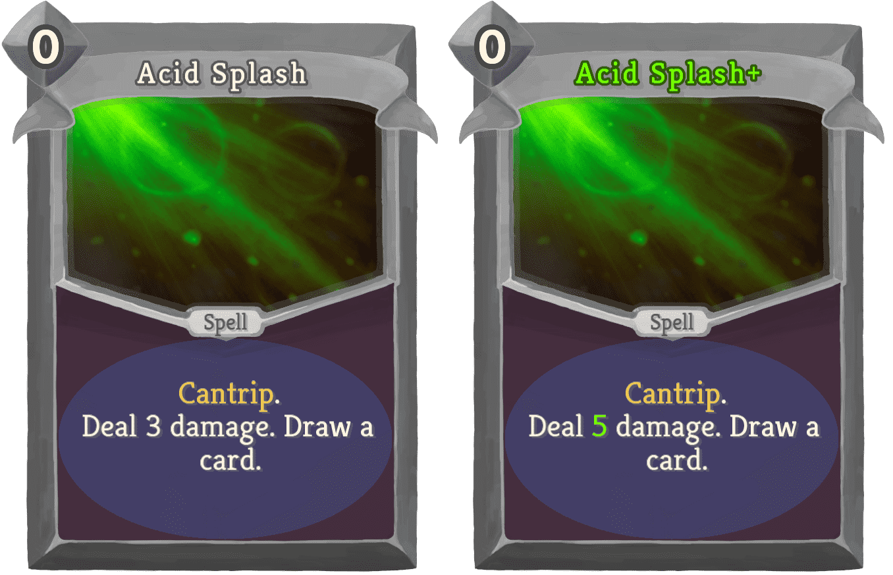 | Special | Attack | 0 | mysticmod:Cantrip. Deal 3 (5) damage. Draw a card. |
| Blade Burst | 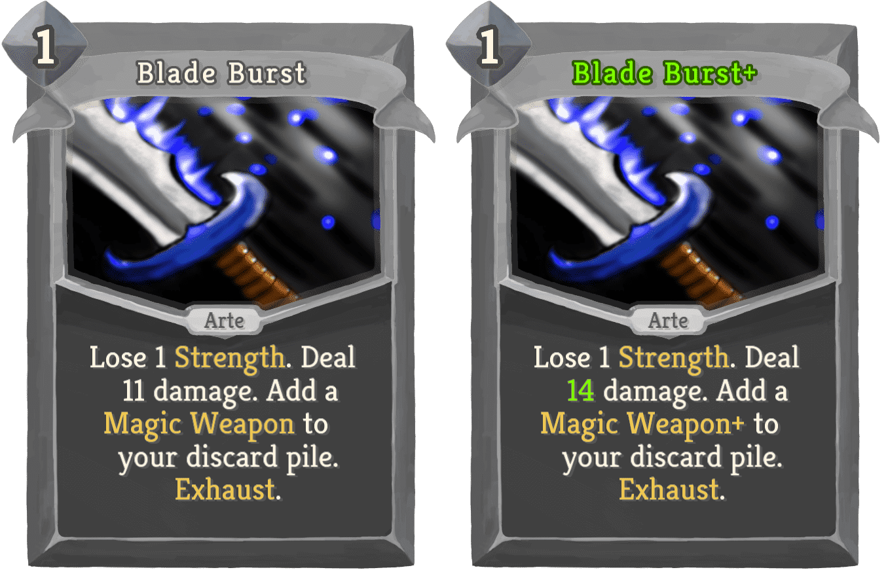 | Special | Attack | 1 | Lose 1 Strength. Deal 11 (14) damage. Add a Magic Weapon (*Weapon+) to your discard pile. Exhaust. |
| Prestidigitation |  | Special | Skill | 0 | mysticmod:Cantrip. Gain 2 (4) Block. Draw a card. |
| Ray Of Frost | 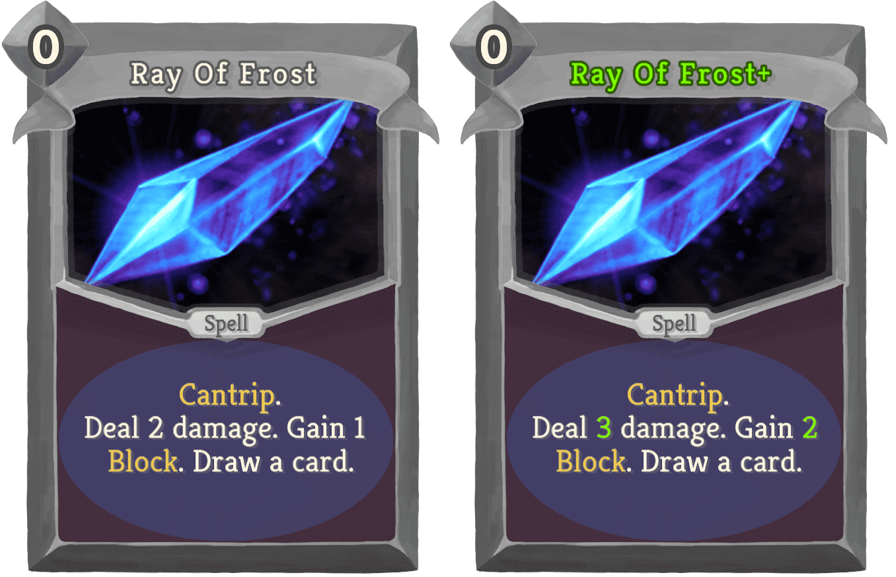 | Special | Attack | 0 | mysticmod:Cantrip. Deal 2 (3) damage. Gain 1 (2) Block. Draw a card. |
| Read Magic |  | Special | Skill | 0 | mysticmod:Cantrip. Draw 2 (3) cards, then discard 1 (2) card(s). Exhaust. |
| Spark |  | Special | Skill | 0 | mysticmod:Cantrip. Draw a card, then gain [E] if the card is a [#5299DC]Spell[] or an [#FF5252]Arte[]. Exhaust. (not Exhaust.) |
| Summon Familiar |  | Special | Skill | 0 | Summon your faithful Fox Familiar. Exhaust. Currently disabled! |
| Arcane Dodge |  | Basic | Skill | 1 | Gain 5 (7) Block. Powerful: Gain an additional 4 (5) Block. |
| Defend | 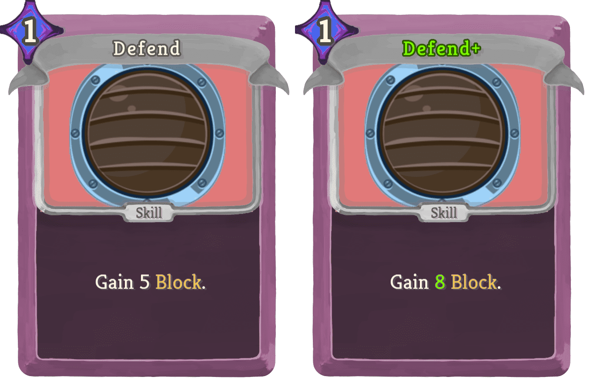 | Basic | Skill | 1 | Gain 5 (8) Block. |
| Shocking Grasp | 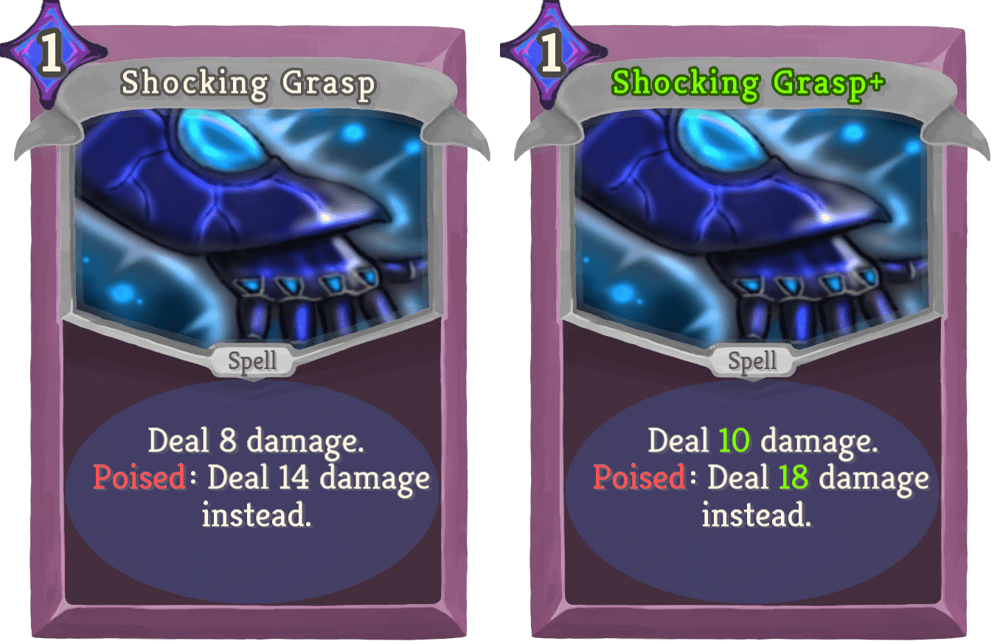 | Basic | Attack | 1 | Deal 8 (10) damage. Poised: Deal 14 (18) damage instead. |
| Strike |  | Basic | Attack | 1 | Deal 6 (9) damage. |
| Alacrity |  | Common | Skill | 1 | Gain 6 (9) Block. Poised: Gain [E] next turn. |
| Bulk Up |  | Common | Skill | 1 | Gain 6 (9) Block, then Exhaust a random card in your hand. Powerful: Choose if and what to Exhaust. |
| Components Pouch |  | Common | Attack | 1 | Deal 6 (8) damage, then deal 6 (8) damage for each Spell in your hand. For 2 (3) turns, all Defends count as Spells. |
| Corrosive Touch | 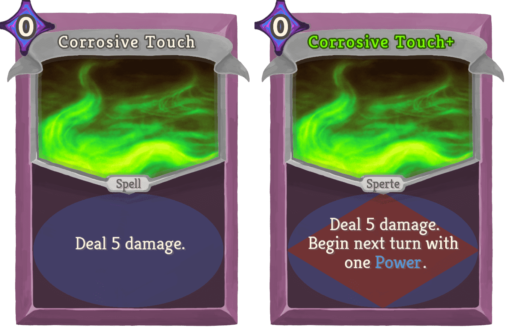 | Common | Attack | 0 | Deal 5 damage.(Begin next turn with one Power.) |
| Disengage |  | Common | Skill | 1 | Gain 7 (10) Block. Begin next turn with one Poise. |
| Diversion | 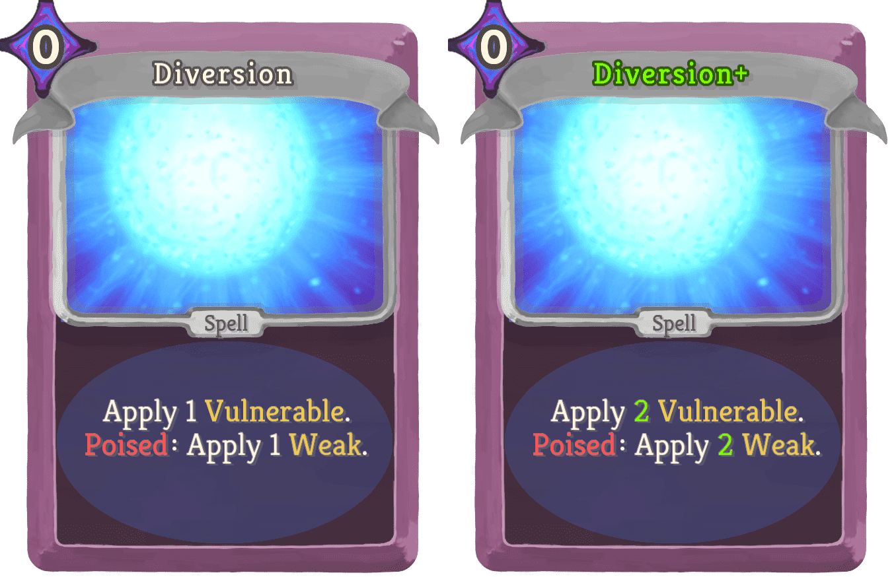 | Common | Skill | 0 | Apply 1 (2) Vulnerable. Poised: Apply 1 (2) Weak. |
| Divining Blow |  | Common | Attack | 1 | Deal 8 (11) damage. Powerful: Draw 1 card for each stack of Power. |
| Heavy Strike |  | Common | Attack | 2 | Deal 6 damage. Powerful: Increase this card's damage by 3 (5) permanently. Exhaust. |
| Lightning Bolt | 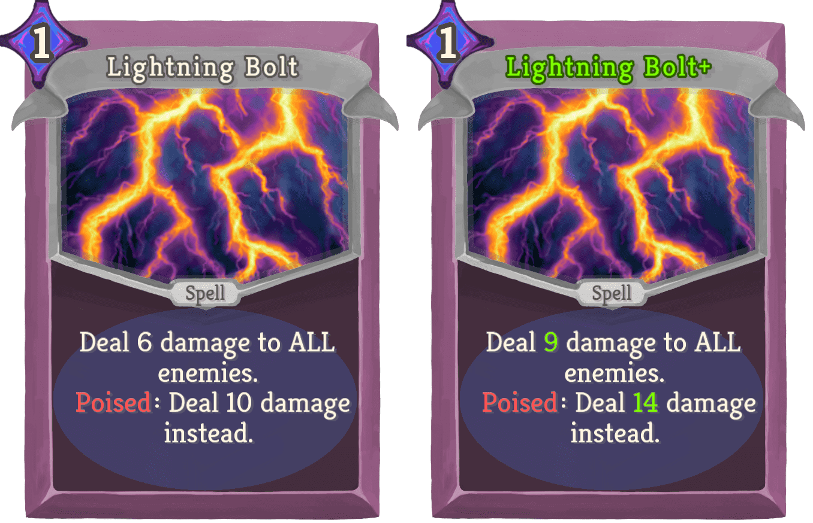 | Common | Attack | 1 | Deal 6 (9) damage to ALL enemies. Poised: Deal 10 (14) damage instead. |
| Power Slash | 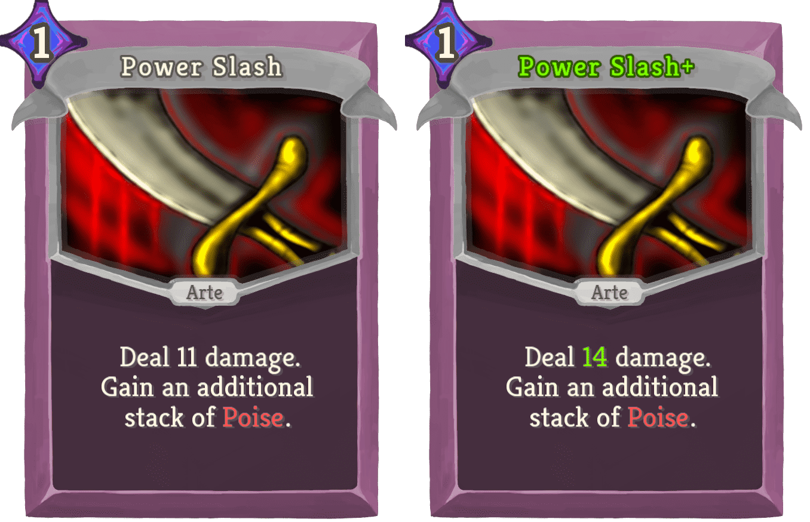 | Common | Attack | 1 | Deal 11 (14) damage. Gain an additional stack of Poise. |
| Probe |  | Common | Attack | 0 | Deal 5 damage.(Begin next turn with one Poise.) |
| Pure Instinct |  | Common | Skill | 1 | Gain 5 (7) Block, then gain 5 (7) Block for each Arte in your hand. For 2 (3) turns, all Strikes count as Artes. |
| Riposte | 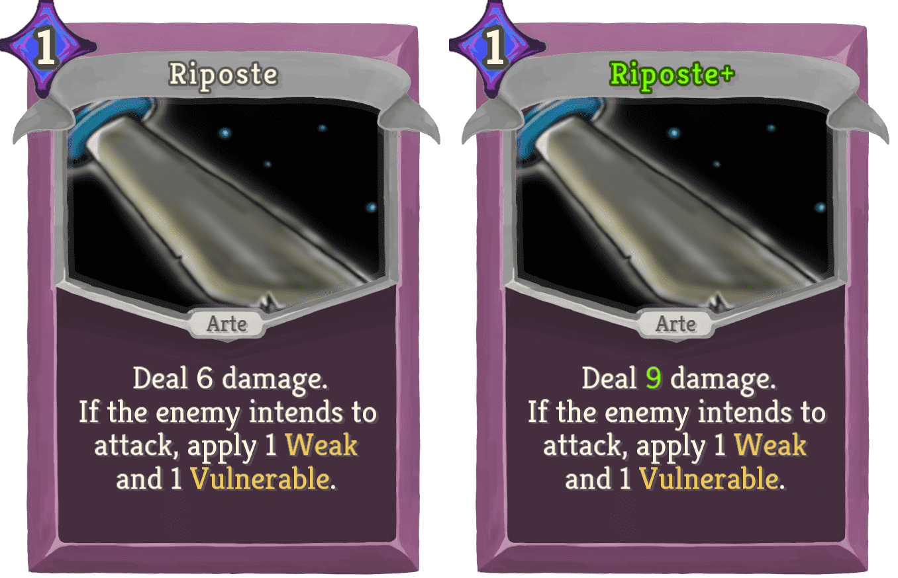 | Common | Attack | 1 | Deal 6 (9) damage. If the enemy intends to attack, apply 1 Weak and 1 Vulnerable. |
| Shield | 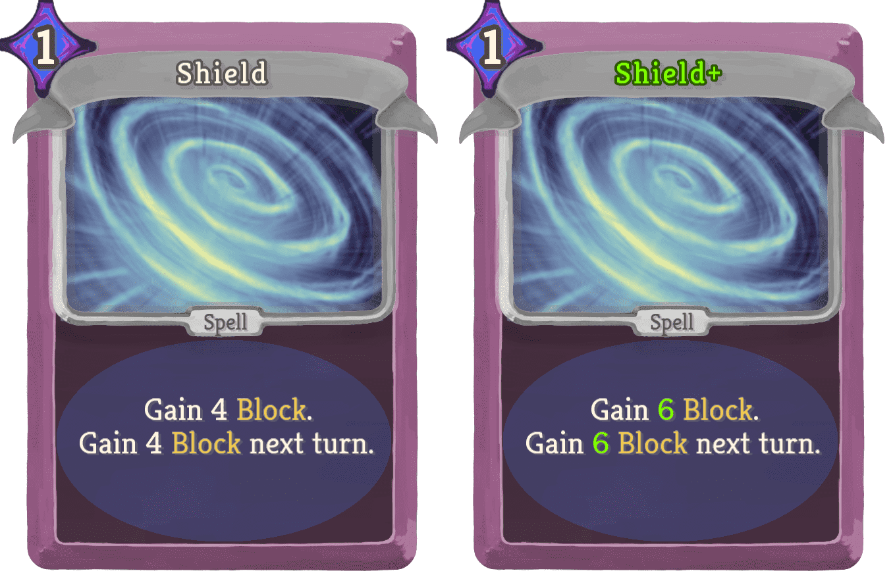 | Common | Skill | 1 | Gain 4 (6) Block. Gain 4 (6) Block next turn. |
| Sideswipe |  | Common | Attack | 0 | Deal 3 (5) damage. Powerful: Apply 1 (2) Weak. |
| Snowball |  | Common | Attack | 1 | Deal 11 (14) damage. Gain an additional stack of Power. |
| Sudden Clarity |  | Common | Skill | 1 | Gain 7 Block. Draw a (!M!) card(s). |
| Tome Of Spells |  | Common | Skill | 1 | Add 2 (3) random mysticmod:Cantrips to your draw pile. Exhaust. |
| 5 Foot Step |  | Uncommon | Attack | 0 | Deal 4 (6) damage. Powerful: Shuffle this card into your draw pile. |
| All In |  | Uncommon | Attack | 0 | Deal 10 (13) damage. Become Weak for 3 turns. Weak amount is reduced for each stack of Power. |
| Blade Master |  | Uncommon | Skill | 1 (0) | Return up to 2 Artes from your discard pile to your hand. |
| Bladed Dash | 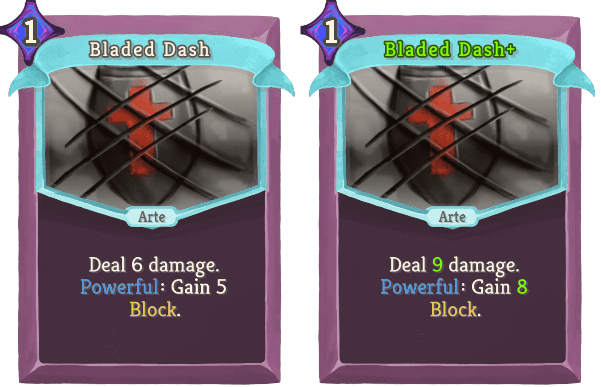 | Uncommon | Attack | 1 | Deal 6 (9) damage. Powerful: Gain 5 (8) Block. |
| Bladework |  | Uncommon | Power | 1 | Gain 2 (3) mysticmod:Technique. |
| Charged Parry | 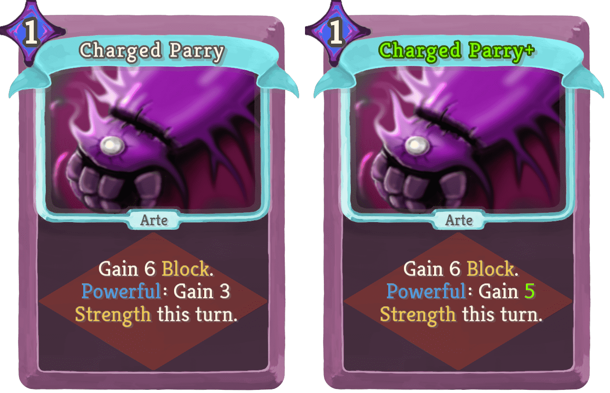 | Uncommon | Skill | 1 | Gain 6 Block. Powerful: Gain 3 (5) Strength this turn. |
| Combo Caster |  | Uncommon | Power | 1 (0) | At the start of each turn, add a random mysticmod:Cantrip to your hand and draw 1 less card. |
| Cure Light Wounds | 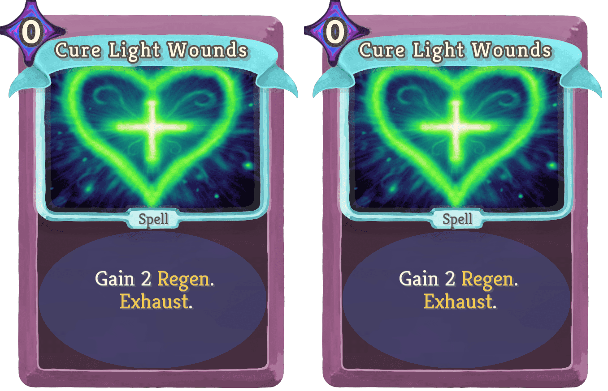 | Uncommon | Skill | 0 | Gain 2 (3) Regen. Exhaust. |
| Dedication |  | Uncommon | Power | 3 | Gain 1 (2) Strength and Dexterity. Can be upgraded any number of times. |
| Earthen Wall |  | Uncommon | Skill | 2 | Gain 12 (15) Block. Gain 4 (5) Dexterity this turn. |
| Ebb and Flow |  | Uncommon | Power | 1 | (Innate.)Each turn, draw 1 card, then discard 1 card unless you have a Spell and 1 card unless you have an Arte. |
| Energized Rift | 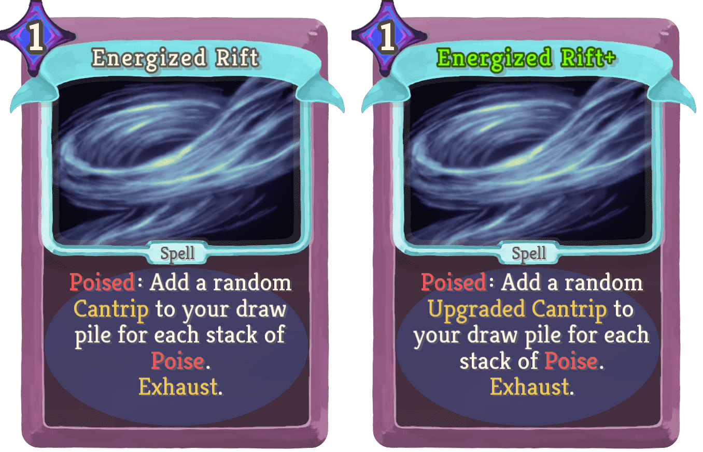 | Uncommon | Skill | 1 | Poised: Add a random (Upgraded) mysticmod:Cantrip to your draw pile for each stack of Poise. Exhaust. |
| Feint | 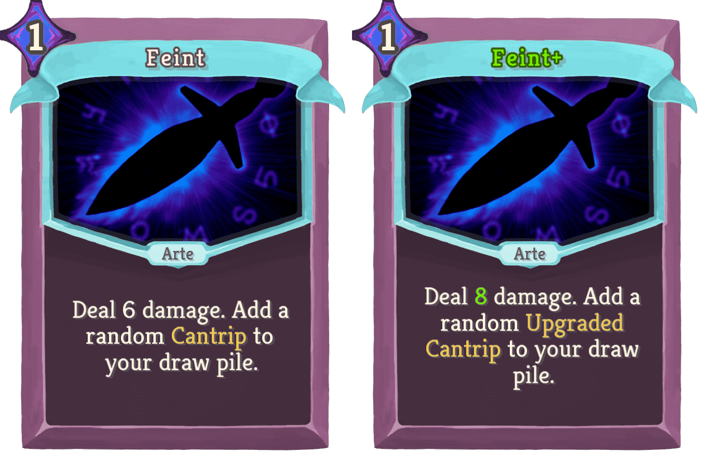 | Uncommon | Attack | 1 | Deal 6 (8) damage. Add a random (Upgraded) mysticmod:Cantrip to your draw pile. |
| Fireball |  | Uncommon | Attack | 2 | Deal 14 (20) damage. Poised: Deal it to ALL enemies. |
| Floating Disk |  | Uncommon | Skill | 1 | Gain 6 Block. Poised: Gain 1 (2) Dexterity. Exhaust. |
| Flourish | 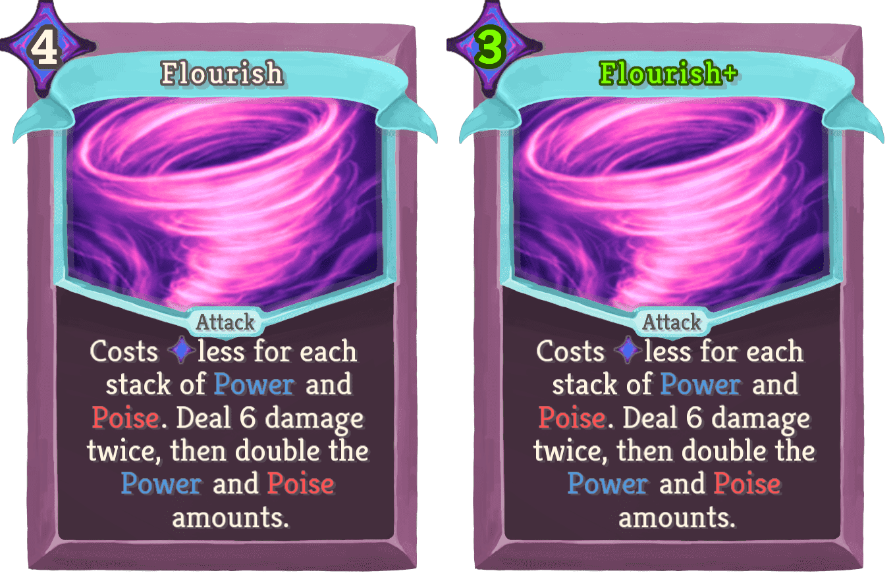 | Uncommon | Attack | 4 (3) | Costs [E] less for each stack of [#5299DC]Power[] and [#FF5252]Poise[]. Deal 6 damage twice, then double the [#5299DC]Power[] and [#FF5252]Poise[] amounts. |
| Flurry |  | Uncommon | Attack | 1 | Deal 2 damage 2 (3) times. Powerful: 4 (5) times instead |
| Fly |  | Uncommon | Skill | 1 | Gain 6 (8) Block. Poised: Block is not removed at the start of your next turn. |
| Grapple | 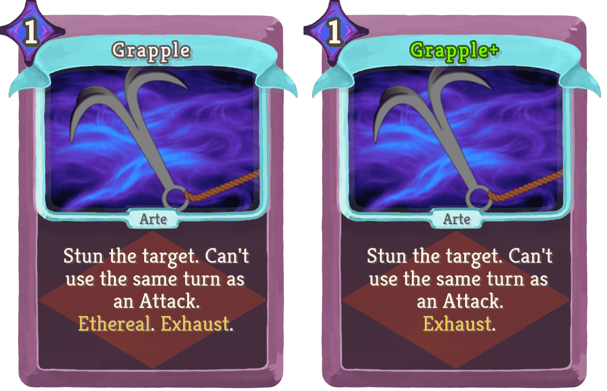 | Uncommon | Skill | 1 | Stun the target. Can't use the same turn as an Attack. Ethereal. (not Ethereal.)Exhaust. |
| Grease |  | Uncommon | Skill | 1 | Target enemy loses 4 (6) Strength this turn. Poised: ALL enemies instead. |
| Hunker Down |  | Uncommon | Skill | 0 | Gain 3 (4) Dexterity until the end of the turn. |
| Illusion Of Calm |  | Uncommon | Skill | 1 | Gain 12 (16) Block. Become Frail for 3 turns. Frail amount is reduced for each stack of Poise. |
| Keen Edge |  | Uncommon | Skill | 1 | Apply 4 Vulnerable to ALL enemies. |
| Magic Missile |  | Uncommon | Attack | 0 | Deal 3 damage for each time the deck was shuffled this combat (, and for each stack of Poise). |
| Magic Weapon | 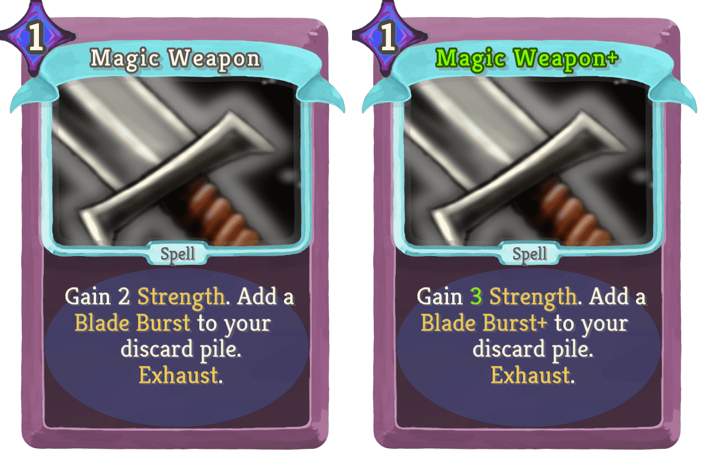 | Uncommon | Skill | 1 | Gain 2 (3) Strength. Add a Blade Burst (*Burst+) to your discard pile. Exhaust. |
| Metamagic | 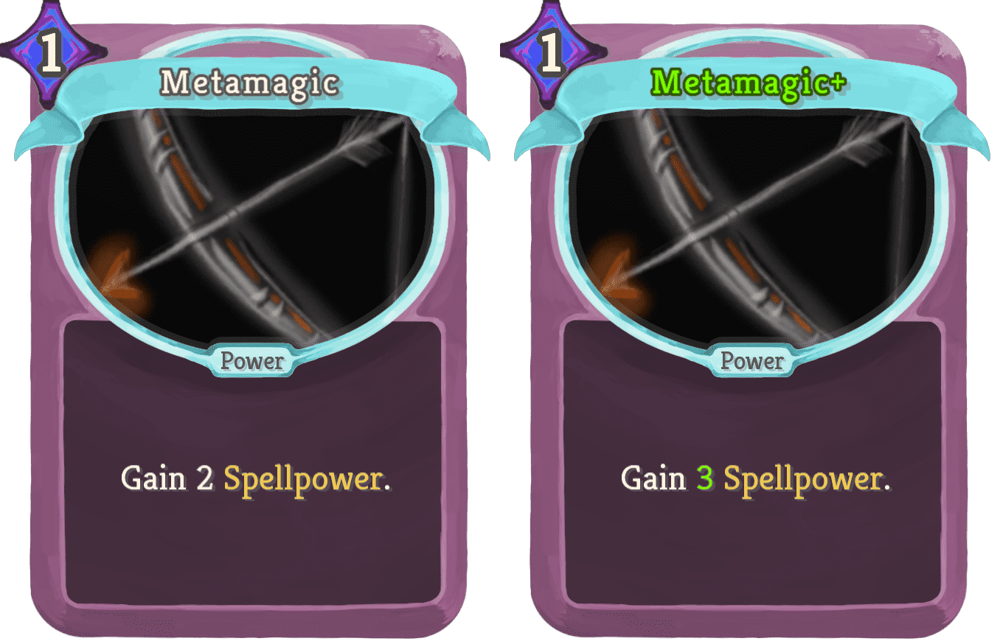 | Uncommon | Power | 1 | Gain 2 (3) mysticmod:Spellpower. |
| Mirror Strike | 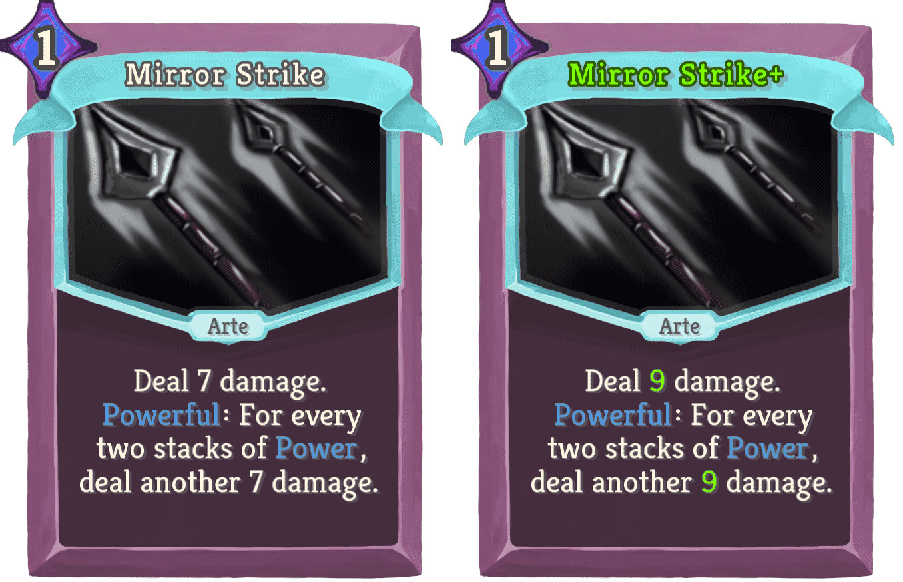 | Uncommon | Attack | 1 | Deal 7 (9) damage. Powerful: For every two stacks of Power, deal another 7 (9) damage. |
| Power Attack | 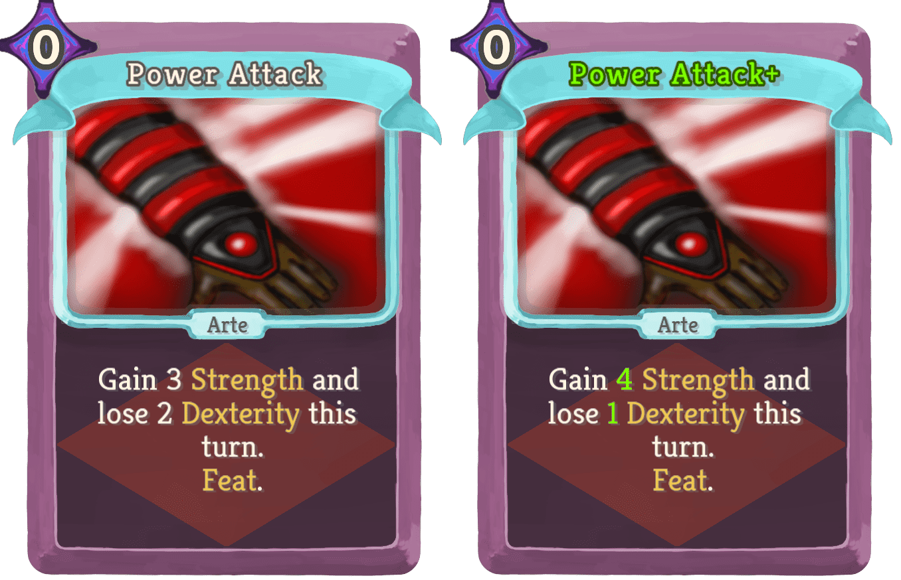 | Uncommon | Skill | 0 | Gain 3 (4) Strength and lose 2 (1) Dexterity this turn. mysticmod:Feat. |
| Prepared Caster | 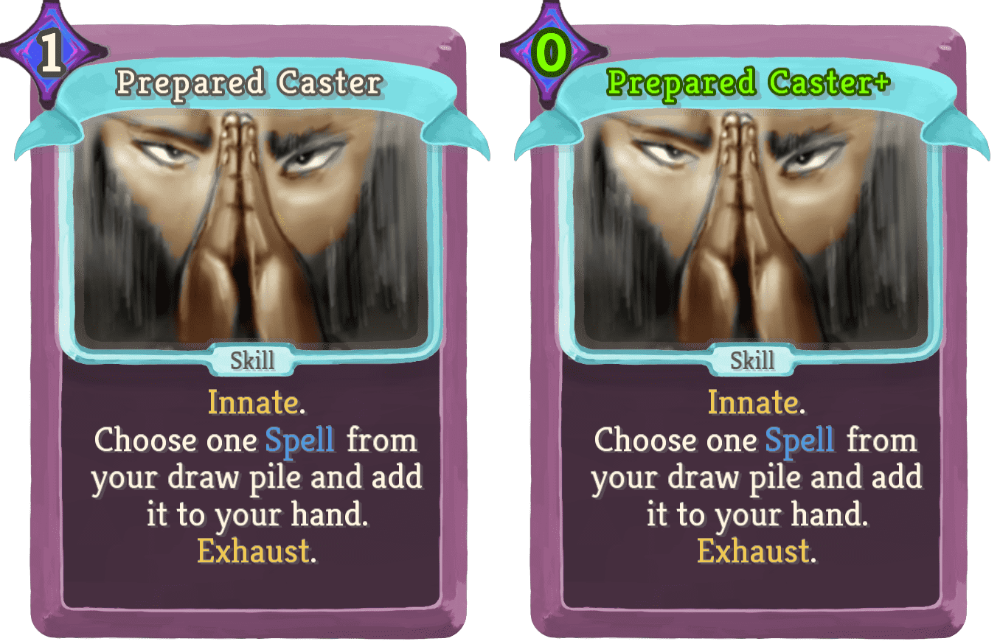 | Uncommon | Skill | 1 (0) | Innate. Choose one Spell from your draw pile and add it to your hand. Exhaust. |
| Punishing Armor | 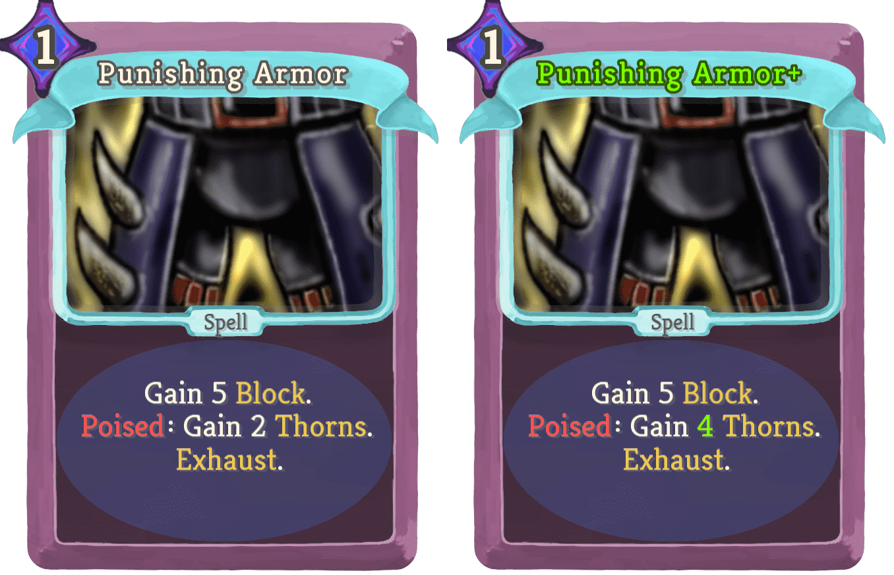 | Uncommon | Skill | 1 | Gain 5 Block. Poised: Gain 2 (4) Thorns. Exhaust. |
| Rapid Caster |  | Uncommon | Power | 2 | (Innate.)The first mysticmod:Cantrip you play each turn is played twice. |
| Spell Combat |  | Uncommon | Attack | X | Powerful: Deal 6 (8) damage X times. Poised: Gain 5 (7) Block X times. |
| Stoneskin | 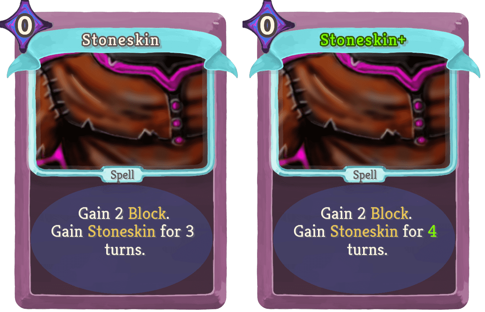 | Uncommon | Skill | 0 | Gain 2 Block. Gain mysticmod:Stoneskin for 3 (4) turns. |
| Style Change |  | Uncommon | Skill | 1 (0) | Add a random Arte to your hand. It costs 0 this turn. Exhaust. |
| Vorpal Thrust |  | Uncommon | Attack | 2 | Deal 12 (16) damage. Powerful: Increase base damage by 6 (8) for each stack of Power. |
| Closing Barrage |  | Rare | Attack | X | Deals Y damage X (X+1) times, where Y is equal to your total Power and Poise multiplied by 3. |
| Discipline | 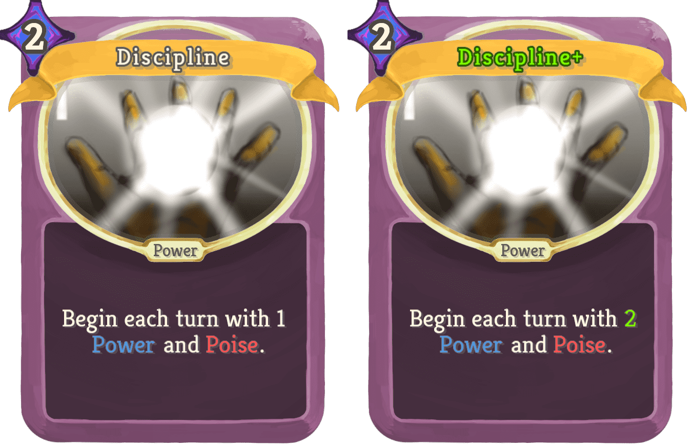 | Rare | Power | 2 | Begin each turn with 1 (2) Power and Poise. |
| Disintegrate | 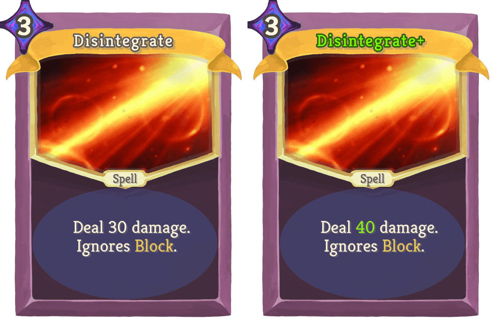 | Rare | Attack | 3 | Deal 30 (40) damage. Ignores Block. |
| Doublecast |  | Rare | Skill | 1 | This turn, your next Spell is (two Spells are) played twice. |
| Enchanted Moulinet |  | Rare | Attack | 2 | Deal 18 (21) damage to ALL enemies. For each enemy that dies, gain [E] . |
| Gemini Form |  | Rare | Power | 3 | For the first Spell and Arte you play each turn, play a random card of the other type from your draw pile. Ethereal. (not Ethereal.) |
| Greater Invisibility | 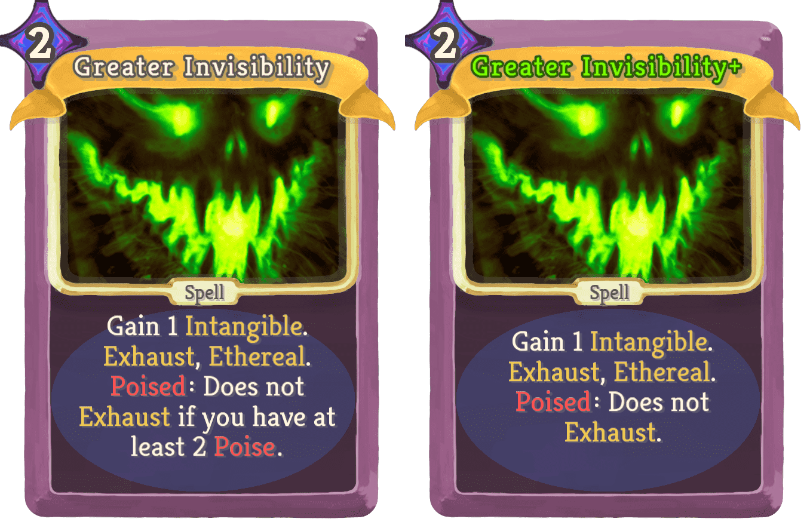 | Rare | Skill | 2 | Gain 1 Intangible. Exhaust, Ethereal. Poised: Does not Exhaust if you have at least 2 Poise (not if you have at least 2 Poise). |
| Haste | 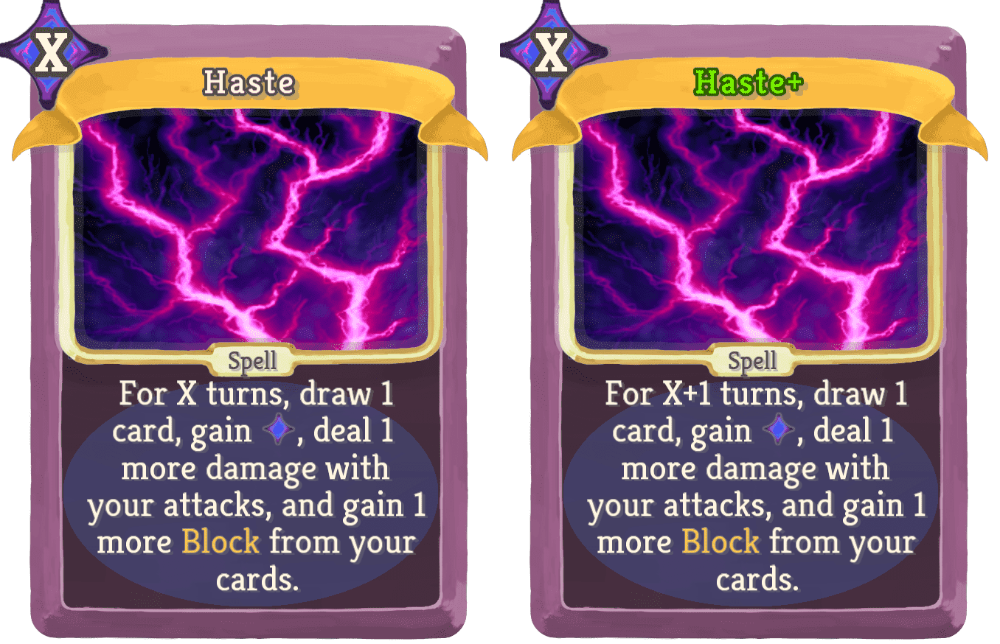 | Rare | Skill | X | For X (X+1) turns, draw 1 card, gain [E], deal 1 more damage with your attacks, and gain 1 more Block from your cards. |
| Knowledge Pool |  | Rare | Skill | 1 (0) | Choose one of 3 random Spell cards and add it to your hand. it costs 0 this turn. Exhaust. |
| Lunge | 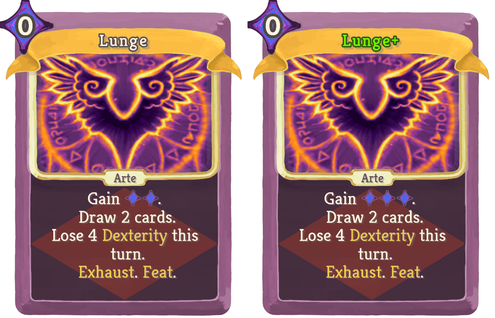 | Rare | Skill | 0 | Gain [E] [E] ([E]). Draw 2 cards. Lose 4 Dexterity this turn. Exhaust. mysticmod:Feat. |
| Mirror Entity |  | Rare | Power | 2 (1) | Spells and Artes also advance next turn's Power and Poise counters. |
| Momentum |  | Rare | Power | 2 (1) | Spells and Artes deal more damage and gain more Block for each stack of Poise or Power respectively. |
| Mystical Shield | 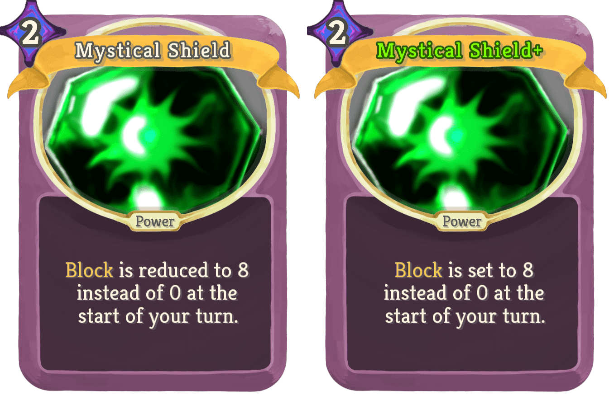 | Rare | Power | 2 | Block is reduced (set) to 8 instead of 0 at the start of your turn. |
| Natural 20 |  | Rare | Skill | 1 | Your next Attack this turn does double damage. Exhaust. (not Exhaust.) |
| Obscuring Mist |  | Rare | Skill | 2 | Gain 15 Block. Poised: Gain 1 (2) Artifact. Exhaust. |
| Spell Recall |  | Rare | Skill | 0 | Return a Spell from your discard pile to your hand. Exhaust. (not Exhaust.) |
| Spellstrike | 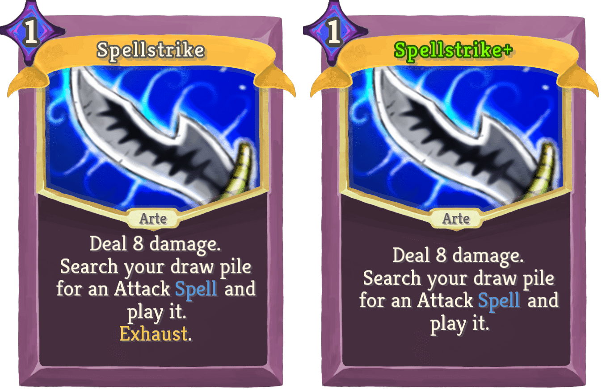 | Rare | Attack | 1 | Deal 8 damage. Search your draw pile for an Attack Spell and play it. Exhaust. (not Exhaust.) |
| Spontaneous Caster |  | Rare | Power | 3 | (Innate.)Whenever you play a Spell, exhaust it and add a random Spell to your discard pile. All Spells' costs are reduced to [E]. |
| Name | Image | Tier | Pool | Description | Flavor |
|---|
| Spell Book | 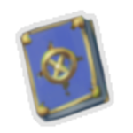 | Starter | Mystic_purple | At the start of each combat, add a random mysticmod:Cantrip to your hand. | A special tome unique to every caster. Contains records of spells that only the writer understands. |
| Training Manual |  | Common | Mystic_purple | At the start of each combat, add a random Arte to your hand | An instructional booklet containing illustrated diagrams for various fighting styles. The handwriting is oddly familiar. |
| Rabbit's Foot | | Uncommon | Mystic_purple | Whenever you play an Arte, Gain 1 block. | Said to bring good luck to its holder. |
| Runic Prism | | Uncommon | Mystic_purple | Whenever you play a Spell, deal 3 damage to a random enemy. | The dark side of the moon god. |
| Kama |  | Rare | Mystic_purple | Every fifth card you play, gain 1 Strength if that card was an Arte, and gain 1 Dexterity if that card was a Spell. | Commonly used to reap wheat and souls. |
| Blessed Book | 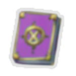 | Boss | Mystic_purple | Replaces SpellBook. Every 2 turns, add a random mysticmod:Cantrip to your hand. | A powerful Spell Book enchanted with mysterious magics. |
| Crystal Ball |  | Boss | Mystic_purple | All non Arte skills are Spells, and all non Spell attacks are Artes. | Cannot interface with Palantír, Pensieves, Scryballs, Gramerhain, Shiral crystals, or Urim and Thummim |
| Deck Of Many Things |  | Boss | Mystic_purple | Gain [E] at the start of each turn. At the end of each turn, if you did not play two Spells and two Artes, lose 2 HP. | It's a mystery why anyone would represent magical effects as a deck of cards. |
| Bent Spoon | | Shop | Mystic_purple | mysticmod:Cantrips deal 1 additional damage and Gain 1 additional Block. | What Lee doesn't want you to know is that there is no spoon. |
{kind=link}
{kind=link}
{kind=link}
{kind=link}
{kind=link}
{kind=link}
{kind=link}
{kind=link}
{kind=link}
{kind=link}
{kind=link}
{kind=link}
{kind=link}
{kind=link}
{kind=link}
{kind=link}
{kind=link}
{kind=link}
{kind=link}
{kind=link}
{kind=link}
{kind=link}
{kind=link}
{kind=link}
{kind=link}
{kind=link}
{kind=link}
{kind=link}
{kind=link}
{kind=link}
{kind=link}
{kind=link}